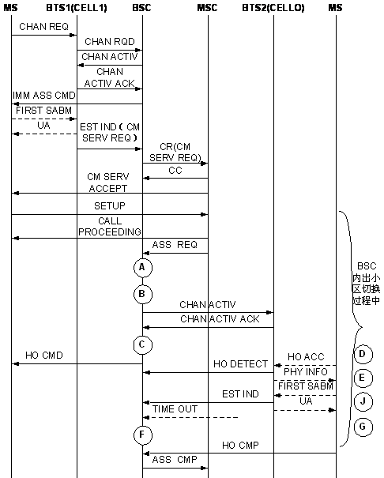

R3100C:CELL_INTRACELL_HO_CH_ALLOC_REQ_TIMES_SD
R3107C:CELL_INTRACELL_HO_CH_ALLOC_REQ_TIMES_FR
R3108C:CELL_INTRACELL_HO_CH_ALLOC_REQ_TIMES_HR
R3109C:CELL_INTRACELL_HO_CH_ALLOC_REQ_TIMES_TCH
In the internal intra-cell handover procedure, the BSC requests the system to reassign the radio channels. If the requested channel type is SDCCH, TCHF, or TCHH, the corresponding counters are measured after the BSC receives the requests.
Channel Assignment Requests in Internal Intra-Cell Handover Procedure (TCH) indicates that the number of the channel assignment requests for TCHFs or TCHHs in the internal intra-cell handover procedure.
Integer number or integer.
As shown at point A in the figure, the previous counters are measured based on the channel type if the requested channel is SDCCH, TCHF, or TCHH in the internal intra-cell handover procedure.

This is an original counter without involving any formula.